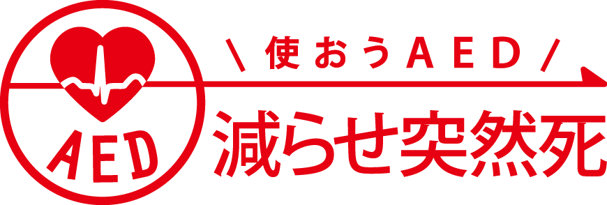

The number of people rushed to the hospital by Cardiogenic CardioPulmonary Arrest is equal to the number of all students of 228 junior high school in the year.
It's time to face up to the 'inochi'.
inochi Education Program
July-November
inochi Gakusei Forum
Dec 23th (Fri)
[Application term has ended] Thank you for your applications!!
The top cause of deaths around the world is ischemic heart disease.
Every 1 minute, it kills 14 people in the the world.
Also, in Japan, it is increasingly drawing attention as Japan enters an aging society.
About 40,000 people are died because of this disease.
Thanks to the government, AED（Automated External Defibrillator）,
a medical device used for electroshock therapy
which can help return the state of the heart back to normal,
is known to everybody and placed like everywhere（about 450,000 in number）, but….
It is only being used for 3.7% of the people
who have experienced a sudden heart attack and have collapsed outside.
Splendid technology cannot elicit its effect unless it is used.
Or, maybe much better technology and much better solutions are hidden in the world?
Aging population and low utility rate of the available technology are problems
that not only affect modern Japan,
but also almost every other country in the predictable future.
So, how about we coorperate to look for the solution,
and be prepared for the problems that may come upon us?
Everyday, lives that should have been saved are being sacrificed.
To save a life we could not save yesterday,
Will you join us to think about the solution?
Are you ready to join us?
It's time to face up to the 'inochi'.
※ inochi is Japanese term meaning 'life'.
Let's run a simulation of considering WHAT and HOW MUCH should be changed to decrease the number of dead caused by sudden cardiac death.
We conduct the problem-solving program about the theme: Reducing sudden cardiac death. KANSAI junior high and high students TEAM(consists from junior high and high school students from Kansai area) and GLOCAL college students TEAM(consist from college students from all over the world) will make a plan after taking 500 minutes training about leadership, design, and medicine. In forum, five selected teams, two from junior high / high school students teams and three from college / university students teams, will give a presentation about their plan. Panel discussion and lectures from experts will be held in the same day.
IDEA CREATION
The participants think solution to the theme as a team. Learning 'design thinking', a framework used in business solution, create some plan and deliver your impactful idea to all over the world.
SOLVE IT GLOCALLY
Not only students from Kansai area but also college students from all over the world will participate this project. Some students from leading university, such as Harvard and MIT, have already stepped forward. Solving Japanese social problem in global area with brains from around the world, then, share various idea from this forum in your local area. inochi Gakusei Forum is aiming such a 'GLOCAL' model.
EXCLUSIVE EDUCATION
inochi Gakusei forum is not only the forum in which you give a presentation about your idea. The true worth is in the education program, 'inochi Education Program', which continues till the forum day. You can learn culture as a medical innovator by taking coursesor workshops from experts from various background such as medicine, management, ICT, and invention. Junior high and high school students in Kansai area can take lecture directly from the experts, and other participants can join this education program online.
MESSAGE
Inochi Future Project President
Dean of Osaka University School of Medicine
Prof. Yoshiki Sawa, M.D., Ph.D.
Making Kansai an international hub for medical care.
I am a heart surgeon that was born, raised, and studied in Osaka.
Using regenerative medicine based methods, I treat patients who suffer from heart disease.
I am confident that Kansai, which has been selected as a national strategic economic zone, has the substantial medical technology, research and facilities, which make it suitable as a future medical care health city.
We should also consider, that it is the power of the youth that will be essential in keeping the medical care in Kansai continuously progressing in 10 years time.
I strongly believe that a project such as this, which allows young people to create innovation in the medical world, is an ideal opportunity for those who aim to be true medical professionals, to reexamine their own aspirations and acquire the power to change the world.
I hope that through this inochi student forum, you will all become leaders who transform the future of medical care in Kansai.
FEATURES
Travel expenses to Japan for winners of the final selection
A total of 3 university student teams (including participants from abroad) can present at the forum in December. In that situation, the teams participating from abroad will receive approx. 3,000 USD as travel expenses to Japan. Please use this opportunity to experience the frontier of Japanese health care.
Field trips to advanced medical facilities (optional)
Last year, we had the opportunity of visiting the Center of iPS Cell Research and Application. It is a valuable opportunity to experience the frontier research facilities which you would normally not have the chance to see, and interact with the people who engage in cutting edge research.
Full support behind making devised plans into a reality after the event
For distinguished ideas, we will support the making of the plans into reality through our sponsors. We as the inochi student project, will also help shape your plan using our knowledge and connections, after the event.
PRIZE: 150K YEN
Application term has ended. Thank you for your applications!!
SUPPORTERS
Sawa Yoshiki
Inochi Future Project President
Dean of Osaka University School of Medicine
Prof. Yoshiki Sawa, M.D., Ph.D.
Uemoto Shinji
Kyoto university
Hepatobiliary Pancreatic Surgery and Transplantation Professor
Takahashi Masayo
Laboratory for Retinal Regeneration:
Project Leader
Suzuki Kan
Osaka university Graduate School of Medicine,
visiting Professor
George Hara
Special Advisor to the Cabinet.
Alliance Forum Foundation Representative Director
Murakami Yoshiki
Institute of Biomedical Research and Innovation（IBRI）
managing director
ADVISERS
Boardmember, 'Reduce Sudden Cardiac Death Project' President, PUSH Project Kyoto university, Environmental Safety and Health Organization Professor

Iwami Taku
To participants of inochi Gakusei Forum Recent medical development is remarkable though, we believe we can save more lives by attracting attentions to health and disease and spreading the circle of people who take actions.
Sudden cardiac death is its typical example.
There are many lives which can be saved if more people become interested in sudden death and try to prevent it and can take an action in emergencies.
I firmly believe that there are things only you, young people, can do.
I hope you produce new idea of saving a lives which we couldn't save yesterday by making the most of your creativity, energy, and network.
Program Director, Japan BiodesignGlobal center for medical engineering and informatics, Osaka university Associate Professor
Yagi Masakazu
Dear. Youth entreprenuers,
Don't you want to change the world? Let's take action now, for better minutes following now, better day than yesterday and better future than today. That is not quite difficult. Reveal what those problems are actually with being considerate of those who suffered from something. Solve them one by one. Through such actions, the world you see would be changes dramatically.
Realize the better world, with your wonderful friends. It is my pleasure that I am joining this project as an adviser.
Looking forward to seeing all you.
SPONSORS
GOLD SPONSORS
SILVER SPONSORS
SCHEDULE
Timeline
*This schedule might be changed without notifications. *If you tap each titles, the details will come up.
July 20th (Wed)
Please check the guidance from here, and fill in the entry form to apply.
July 23th (Sat)
In case where there are too many applicants, a screening will be conducted based on the information from the entry form. An interview may be conducted if necessary.
July 10th (Sun)
[WHY]Sawa Yoshiki, M.D. (Dean of Osaka University School of Medicine) 'Innovation in the Field of Medicine' [WHY]Masayuki Teramoto (President of inochi Gakusei Project, School of Medicine, Osaka university) 'Introduction' [MEDICINE]Textbooks on CPR and sudden heart attacks will be distributed to participants.
July 18th (Mon)
[WHY]Conversation with the families of patients who survived sudden heart attacks [MEDICINE] Onishi Shizuo, M.D. (Department of Traumatology and Acute Critical Medicine, Osaka University Hospital) 'Current Situation of Acute Critical Medicine' [HOW TO THINK]Kikawada Kazue M.D. (Osaka University, Departament of International Public Policy, visiting Professor) 'Deisgn Thinking and Leadership'
July 25th (Mon)
[MEDICINE]Uemoto Shinji M.D. (Kyoto university, Hepatobiliary Pancreatic Surgery and Transplantation Professor) Short speech [MEDICINE]Iwami Taku M.D. (Kyoto university, Environmental Safety and Health Organization Professor)'Facts about sudden cardiac deaths' [CONNECTION]Student Session 'What is it like to be in Osaka/Kyoto University? ~The Life of a Medical Student~'
July 30th (Sat)
[HOW TO EXPAND]Kuge Hiroatsu (Senior Communication Design Planner, Dentsu, Inc.) 'Ideas and Communication Planning' [HOW TO THINK]Suzuki Kan, M.D. (Osaka university Graduate School of Medicine, Visiting Professor) 'Mindset as a Leader'
August 3rd (Wed)
[HOW TO EXPAND]Namikawa Tetsuji (Global Shapers, Shingu City Council Member) / Ohmae Haruyo (Global Shapers, Hyogo Prefecture Council Member) / Shimoyama Sayoko (Linkdata.org) 'How govenment & opened data change the world' [HOW TO EXPAND] 'Government x Opened Data x Medicine'
August 29th (Tue)
[MEDICINE]Tour of the most advanced medical facilities in Kansai Area: RIKEN Center for Developmental Biology (CDB) & RIKEN Center for Life Science Technologies (CLST)
September 4th (Sun)
[HOW TO THINK]Kawakami Hiroshi (Kyoto university, Unit of Design Professor)'Benefit of Inconvinience x Medicine' [HOW TO THINK]Sponsor Presentation [HOW TO THINK]ICT Practice: Pre-hackathon
Within September
[HOW TO THINK]Practice of Design Thinking ~Hackathon Event~
September to October
Mentors mainly from Osaka University and Kyoto Univerisity will provide participants advice about their proposal. The proposals will be completed through cooperation between team members and their mentors.
October 10th (Mon)
A midterm presentation will be held to update the progress of each team. Feedbacks will be given to each team.
November 6th (Sun)
KANSAI Junior High/High School Team: Teams will give their presentation to the Deliberation Committee.
The two teams who get the highest evaluation will advance to the final forum.
GLOCAL College Team: Teams will upload their presentation videos and powerpoints on the web and will be subjected to online voting. Three teams will be selected based on the number of votes and deliberation by the official committee, and will advance to the final forum.
December 23rd (Fri)
The five teams who pass the final selection will give their presentations. The winning team will receive prize (around 150K yen) and support towards the realization of their proposal.
ENTRY
How to apply?
"inochi student Forum" is composed by mainly 2 types of participants' group; one is "KANSAI junior high/ high school TEAM" , targeting junior high/high school student in Kansai area and the other is "GLOCAL college student TEAM", tageting bachelor and graduate students all over Japan and the world.
■ KANSAI junior high/high school student TEAM ■
Who can apply?
junior high/high school students in Kansai area (Oosaka, Kyoto, Hyogo, Shiga, Nara, Wakayama) *participate individually or team (up to 4 members/team). If you apply individually, you'll work together with other individual members as team.
The contents of the program
・inochi Education Program;
you can attend a lecture and you can observe the most advanced medical facilities.
・facilitator;
facilitator system by medical students in Oosaka Univ. and Kyoto Univ.is adopted. You can ask anything about the planning to facilitators.
How to select the team to join the forum?
As for "KANSAI junior high/high school student TEAM", the final selection event to join the forum will be held in the biginning of November. Through strict judgement, 2 teams will be selected.
the number to be admitted
approximately 20 teams, 50members
*In case of a lot of applicants, members will be selected through entrysheet and interview.
participant fee
FREE
■ GLOCAL college student TEAM ■
Who can apply?
Bachelor and graduate students interested in medicine, business and science and technology studying all over Japan and the world. *please apply as a team (minimum 2, up to 4 members), regardless of your department nor grade.
the content of the program
・inochi Education Program;
you can attend the class from online (please log in the participant private page from our HP). All lecture classes are available.
・facilitator;
At least one facilitator will be in charge of your team and support your planning and management. However, in order to develop your originality, we strongly recommend you to plan by yourselves.
How to select the team to join the forum?
As for "GLOCAL college student TEAM", the final selection event to join the forum will be held online. After you upload the video of your team, 3 teams will be selected thorough online voting.
the number to be admitted
approximately 20 teams, 50members(domesically and internationally)
*In case of a lot of applicants, members will be selected through entrysheet and interview.
participant fee
FREE(For final presentation teams from foreign countries, we are preparing applox. 3,000USD for travel expense to Japan.)
PRIZE: 150K YEN
Application term has ended. Thank you for your applications!!
FAQ
>>About application and participation
We are KANSAI Junior High/High School Team, GLOCAL College Team, but cost on team`s own account will depends on the plan of each team. Please visit the website and check the ENTRY part for details.
No. You can participate our event without any prior knowledge. Everyone who has a fire for learning and will participate the event with gravity can join us!
As for last year, Many middle and high school students of kansai area took part in the contest.
In principle, we recommanded to take all lectures.
but we know there is in case of the four ceremonial occasions like coming of age, wedding, funeral, and ancestral rites,also school stuff which is unavoidable, so we accept absent. but you should know that can cause inconvenience to team members. Your cooperation in this matter will be appreciated.
>>About contents
The kick-off event is at the beginning of July. The student forum is held on December 23. It will take about half a year.
For last year, there are three section - conference, group work , presentation. We would like all the students to divide into small groups that can take a lecture and have a discussion. At the end of the forum, We would like all the group submit the report and presentation, though.
You may do as you wish outside working hours, but in many cases like last years, there were students gathering on their own to practice and to discuss about subjects. also there were team who used mobile application like skype that they met and dicussed with anytime and anywhere.
Some materials are forbidden to take out and download for enterprise policy for information protection. I hope you understand why it may be uncomfortable for us to give you that information.
Futher more questions? E-mail us!
ORGANIZER
About inochi Gakusei Project
inochi Gakusei Project is a self project organized by students mainly in Kyoto University and Osaka University, cooperating with inochi Mirai Project.We aim to solve local healthcare problems, developing innovative youngsters who can apply new technology to healthcare.
About inochi Mirai Project
“Think the importance and the future of inochi. Act what we can do."
Medical staffs, companies, governments, and citizens— we think and act with everyone.
We aim to change Kansai and Japan into an area and a county where the people live long and healthy lives.
In June 2014, we launched an executive committee of inochi Mirai Project. For accelerating healthcare innovation from Kansai, we founded a general incorporated association, inochi Mirai Project in November 2015.
 BGM OFF X
BGM OFF X